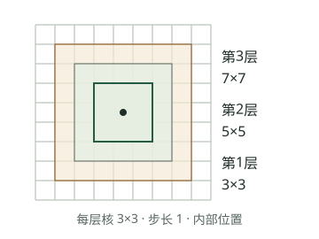
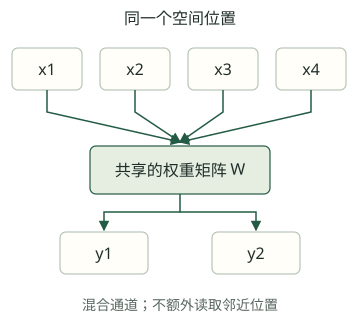
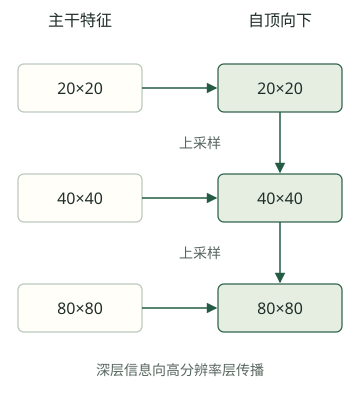
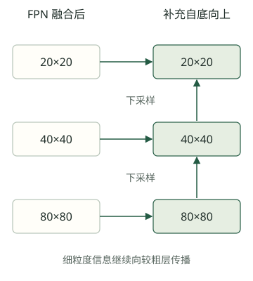
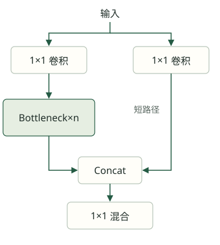
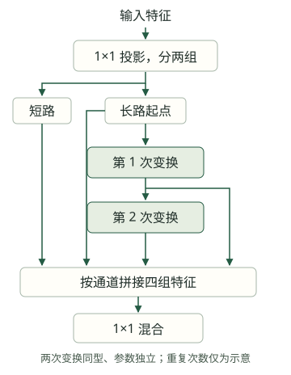
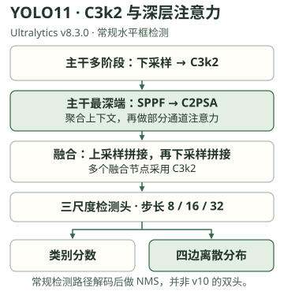

主线① · 特征提取与多尺度融合
从设计目的，
读懂特征网络。
目标检测既需要边缘、纹理和位置细节，也需要能帮助判断目标的较大范围信息。Backbone 逐层提取特征，Neck 再组织不同层级的信息。阅读结构时，应当把感受野、跨尺度连接路径、块内计算分开：它们有关联，但不是同一个改动。
读图顺序：设计目标 → 空间与通道 → 跨尺度路径 → 块内计算 → 版本与边界。结构图为按原理和所列代码绘制的示意，不是实际特征可视化；省略了部分算子、通道及重复次数。
带点线的词可悬停查看释义；点按可固定，再点一次或按 Esc 收起。
01 · 先按设计问题分类
网络设计，在改变什么？
下面是阅读特征网络的八个观察角度，属于主线①内部，不另起一套学习主线。一个模块可能同时改变多个角度；先确定它改变了什么，再判断这种改变是否有利于当前任务。
| 设计问题 | 常见手段与机制 | 可能收益与代价 |
|---|---|---|
| 能否保留可定位的细节？ | 提高输入或特征分辨率、减少下采样、保留高分辨率支路、切片。 | 提高空间采样密度，减少缩放导致的细节损失；计算与激活存储增加。插值放大已低分辨率的图，并不新增真实信息。 |
| 需要多大范围的上下文？ | 叠加空间卷积、大核、空洞卷积、池化、注意力。 | 扩大或调整信息交互范围，帮助理解局部与整体关系；无关背景也可能进入，且更大理论感受野不保证被有效利用。 |
| 同一位置的信息怎样表达？ | 1×1 卷积、通道扩展或压缩、非线性变换。 | 重组通道、改变表达容量和后续计算量；压缩可能丢信息，增加通道也不保证增加有效特征。 |
| 怎样适配目标尺寸变化？ | 图像金字塔、多尺度训练、多尺度特征输出，以及 SPP 式上下文聚合。 | 分别改变输入尺寸分布、推理输入或可选特征层；这些“多尺度”不是同一操作，额外尺度也有成本。 |
| 哪些信息该相遇？ | FPN、PAN、跨层连接、Concat、Add。 | 把细节、语义或不同路径信息组合起来；需考虑空间对齐、通道与信息冲突，拼接本身不等于学会有效融合。 |
| 深层变换能否学好？ | 残差、CSP 路径、归一化、辅助监督。 | 改善优化条件、信息与梯度路径；结构更易训练不保证更强泛化，也不能由跳跃连接直接推出严格可逆。 |
| 采样或交互是否随内容变化？ | 可变形卷积、注意力、门控。 | 学习更合适的采样位置或交互权重，适应形状和内容；训练与部署复杂度增加，并非只是在扩大固定窗口。 |
| 怎样在预算内完成计算？ | 瓶颈、分组或深度可分离卷积、重参数化、深度宽度缩放。 | 重新分配空间与通道计算，或简化部署图；FLOPs、参数量、显存、真实延迟必须分别测量。 |
三种证据要分开。输出形状、参数量、理论感受野属于可计算的机制；“更大上下文可能改善判断”属于有条件的设计假设；“AP 提升、推理更快”属于实验结论。两个模型采用相似思路，不能互相证明有效；一次整体提升也不能证明其中每个模块都有贡献。
“多尺度”至少要说清是哪一种
多尺度训练：训练时改变输入或目标尺度，改变模型见到的数据分布。多尺度特征输出：同一次前向从多个分辨率层预测。图像金字塔或多尺度测试：对不同尺寸输入分别运行，再处理结果。SPP 式聚合：在同一特征层上汇集不同池化范围的上下文。它们可以组合，但不能用同一个“多尺度”替代各自机制和成本。
更基础的解释：归纳偏置、等变性、容量与信息保留
归纳偏置：结构预先限定更容易表示哪些关系。例如普通卷积使用局部连接和空间共享参数，适合反复出现的局部模式；注意力允许按内容改变交互权重。偏置是建模选择，不是正确答案的保证。
等变性与不变性：输入平移后，输出特征相应平移，称为平移等变；输出保持不变则是另一种性质。卷积的等变性质需要结合边界、步长和采样条件理解，不能把带下采样的整个 CNN 说成对任意平移完全等变，也不能由此推导出尺度不变。
表达容量与可训练性：深度、宽度和非线性影响可表达的函数；残差与归一化等影响这些函数是否容易学到。“能够表达”不等于“有限数据和优化预算下能够学好”。
信息保留与预算：采样、压缩和融合在任务相关信息与执行成本之间取舍。压缩不一定有害，冗余可能被去掉；但额外通道、上采样或多条路径也不能保证恢复输入中已丢失的真实信号。
性质与边界参照：Group Equivariant Convolutional Networks · Making Convolutional Networks Shift-Invariant Again。
延展机制的原始依据：ResNet、MobileNet、可变形卷积。表中按设计问题组织的分类是本页归纳，不是这些论文共同证明的统一理论。
02 · 空间采样与上下文
分辨率决定采样有多细，
感受野描述一个位置能涉及多广。

卷积核仍是 3×3，为什么深层能涉及更大的原图范围？
感受野是一个特征位置沿计算关系回溯，理论上能够受到原图哪些位置影响的范围。第一层的一个 3×3 卷积读取原图的 3×3 区域；第二层读取的是第一层相邻的 3×3 个位置，而这些位置各自已经汇总了原图信息。把它们对应的原图区域合起来，范围便扩大了。
先只看水平方向，连续两层都使用核宽 3、步长 1。第二层一个位置读取第一层的三个相邻位置，它们分别依赖：
第一层左位置：原图位置 1、2、3 第一层中位置：原图位置 2、3、4 第一层右位置：原图位置 3、4、5 第二层一个位置：合起来涉及 1、2、3、4、5
所以两层在这个方向覆盖 5 个位置，不是 3×3=9 个互不重叠的位置。二维同理：连续 3×3、stride=1 的普通卷积，在不受边界影响的内部位置，理论感受野依次为 3×3 → 5×5 → 7×7。
网络变深不必然让空间分辨率下降。例如 3×3、stride=1、padding=1 可以保持宽高不变，却扩大感受野。分辨率下降通常来自步长大于 1 的卷积、池化或其他下采样；连续 1×1、stride=1 卷积虽增加变换深度，却不会额外引入相邻空间位置。深度、分辨率与感受野应分别判断。
下采样为什么会让后续卷积的感受野增长更快？
把一条卷积路径中某层的感受野边长记作 r，把该层相邻位置在原图上的采样间隔记作 j。初始 r=1、j=1。对核大小 k、膨胀率 d、步长 s 的普通卷积，有 r新=r旧+(k−1)×d×j旧，j新=j旧×s。先用旧间隔计算感受野，再更新间隔；j 不是该位置只看多大一块原图。
例如连续经过 3×3/s2 → 3×3/s2 → 3×3/s1，各层的 (r,j) 依次是 (3,2) → (7,4) → (15,4)。前面下采样后，相邻位置在原图上已经相隔多个像素，因此后续 3×3 覆盖的原图跨度增加得更快。这里忽略边界 padding 的真实像素截断，也没有把多分支网络直接简化成一条路径。
这里计算的是理论可影响范围，不保证范围内每个像素都被同等利用。实际贡献还取决于权重、激活与训练，不能把“感受野更大”直接等同于“语义必然更强”或“小缺陷必然更好”。
感受野定义、步长与计算关系：Computing Receptive Fields of Convolutional Neural Networks。
03 · 通道表达与计算预算
1×1 卷积不看新邻居，为什么仍有用？
普通 groups=1、stride=1 的 1×1 卷积，在同一空间位置对所有输入通道做可学习的加权组合，并把同一组权重共享到各位置。它可以把 H×W×256 变成 H×W×64，也可以扩成更多通道，宽高不变。它改变的是通道表示，不是把空间特征图缩小。

放在昂贵的 3×3 卷积前，可以先减少参与空间计算的通道；放在拼接后，可以混合不同来源并调整通道；放在预测末端，可以把特征转换成所需输出维度。压缩不是自动无损，具体放置位置需要任务和预算共同决定。
一个简化算例：为什么先降通道可能省计算？
忽略偏置和 BN，一个普通 3×3 卷积从 256 通道到 256 通道，需要 9×256×256=589824 个权重。若采用 1×1:256→64 → 3×3:64→64 → 1×1:64→256，总权重为 16384+36864+16384=69632。
在相同空间尺寸下，相应乘加次数也减少。但中间通道约束改变了可表达函数，还增加算子和特征搬运；参数更少不能直接保证同精度或实际延迟按相同比例下降。常规卷积乘加次数可按 H输出×W输出×Cin×Cout×k²/groups 估算，是否将乘加计为一次或两次 FLOPs 需统一口径。
通道内局部建模可参照 Network In Network；空间与通道计算分离参照 MobileNet。上述数值是本页按形状计算的示例，不是网络实验结果。
04 · 跨尺度的信息路线
FPN / PAN 决定路线，
不是决定每个节点里用哪一种块。


FPN、PAN 与 C3k2，处在同一个比较层级吗？
窄屏可左右滚动查看职责。
| 层级 | 代表 | 主要解决什么问题？ |
|---|---|---|
| 跨尺度连接路径 | FPN、PAN / PAFPN | 不同分辨率的特征从哪里来、怎样对齐、向哪个方向传播和融合。 |
| 局部特征计算块 | CSP 系列、C3、C2f、C3k2 | 一个节点内部怎样分支、卷积、复用特征并控制计算和梯度路径。 |
| 上下文与特征交互模块 | YOLO 式 SPP / SPPF、C2PSA | 同一特征层上怎样聚合不同范围的上下文，或引入更广的特征交互。 |
C3k2 可以放在融合路径的节点里，也可以放在主干阶段中；它不是替代 FPN 的另一张跨尺度连接图。同样，YOLO 配置文件中名为 head: 的部分常把特征融合和最后 Detect 都列在一起，不能仅凭配置分组就认定里面每一层都是最终预测头。
FPN 与 PAN：为什么先向上采样，再向下采样？
FPN 主要让分辨率较高的层也得到深层语义。以现代常见 640 输入的 20×20、40×40、80×80 三层为示意：先把深层 20×20 特征上采样，与主干的 40×40 特征融合，再向 80×80 传播。论文中的“自顶向下”指从深层向浅层层级传播，不是从图像上方移到下方。
上采样本身只做复制、插值等变换，不能找回已经丢掉的真实细节；来自较高分辨率主干层的横向连接，才把仍保留的细节引入融合。因此 FPN 不是简单地把一张很小的深层特征放大。
PAN 的自底向上增强，让细粒度定位信息以较短路径继续传到较粗层。在已经融合的高分辨率特征上，再进行 80×80 → 40×40 → 20×20 的下采样与逐级融合。它让信息在层级间更充分流动，但也增加计算、激活存储和特征搬运成本，并不保证所有尺寸目标都会提升。
原始 FPN 的横向融合主要用相加；许多 YOLO 使用调整后的拼接路径。原始 PANet 还包含面向实例分割的其他组件，不能把 YOLO 的 PAN-like Neck 等同于完整 PANet。后文的 80/40/20 仅是分辨率示意，不代表初代 YOLO，也不是小、中、大目标各自独占一层。
拼接和相加分别做了什么？
设两个特征均为 80×80×128。沿通道拼接后是 80×80×256，两路信息先被放在一起，Concat 自身没有可学习参数；后续卷积负责混合、筛选和调整通道。尺寸不一致时，先上采样或下采样对齐空间分辨率。
逐元素相加后仍为 80×80×128，要求相加维度兼容，必要时先用投影调整通道。相加通常不增加输出通道，但可能把不同来源直接混合；拼接保留显式通道来源，却可能增加后续卷积和存储成本。哪一种更有效，需要相同条件下实验，而不是只看“融合”二字。
原始定义：FPN §3 · PANet §3.1。YOLO 的改造实例：YOLOv4 的改造 PAN、YOLOX 的 PAFPN。
05 · 同一节点内部怎样计算
路径相近，
内部计算仍可不同。



C3、C2f、C3k2：融合路径里的计算怎样变化？
窄屏可左右滚动查看结构与取舍。
| 模块 | 怎样处理特征 | 设计作用 | 取舍与边界 |
|---|---|---|---|
| CSP 思路 | 把特征分成不同路径，一部分经较重变换，另一部分走较短路径，再融合。 | 组织特征复用和梯度传播，避免所有通道都经过同样的重计算。 | 具体划分、计算量和残差规则随实现变化；CSP 是一类设计思路，不是所有版本共有的一种固定模块。 |
| C3 · v5 v6.1 | 两条投影支路，其中一条经过一串 Bottleneck，最后拼接并用卷积混合。 | 在较短信息路径与多层变换之间取得平衡。 | C3 名称中的三次外层卷积不是跨尺度三层；Bottleneck 内是否启用残差要看位置和配置。 |
| C2f · v8 | 先投影并分成两部分，一路依次经过多个 Bottleneck；保留各步中间输出，与起始两部分一起拼接混合。 | 显式聚合更多中间层级特征，提供不同长度的信息与梯度路径。 | 这些 Bottleneck 依次处理，不是彼此独立并行；更多拼接可能增加激活存储与带宽，不能只凭名称保证更快。 |
| C3k2 · YOLO11 | 沿用 C2f 的外层组织，内部按配置采用 Bottleneck 或 C3k 子块；C3k 进一步组织卷积变换。 | 在相似接口下调整内部计算和容量，配合模型规模与不同阶段分配计算预算。 | 不是所有位置都启用相同内块，也不是一个固定的大核卷积；不能把整代模型的收益全部归给 C3k2。 |
| YOLO 式 SPP / SPPF | SPP 并行聚合不同池化范围；SPPF 常串行三次 5×5、stride=1 的最大池化，聚合相当于 5/9/13 范围的结果。 | 在保持特征分辨率时汇集不同范围上下文；SPPF 用重复的小池化实现相应范围。 | 不是产生多个检测尺度，也不是恢复细节；实际速度收益仍依赖实现和硬件。 |
| C2PSA · YOLO11 | 先分支，让部分通道经过注意力与前馈变换，再与另一支融合。 | 补充较广范围的内容交互，同时控制注意力计算范围。 | 它与 C3k2 是不同模块；所列 YOLO11 配置把它放在主干深层、SPPF 后，不能把它一概称为 Neck 模块。 |
这条变化可以理解为：保留短路径 → 增加中间特征复用 → 按阶段调整内部计算，并补充上下文交互。它是结构设计视角的归纳，不是每一步必然胜过上一步的定理。是否提高精度或降低延迟，需要对应的消融与实测。
06 · 回到具体实现
按版本核对结构，
按实验判断收益。
把这些设计放回具体 YOLO 分支

窄屏可左右滚动查看版本与设计作用。
| 版本 / 路径 | 特征块与连接 | 为什么这样组织，边界是什么？ |
|---|---|---|
| YOLOv3 · 原版 | Darknet-53 残差主干；上采样与横向拼接，形成三个输出尺度。 | 把深层语义与较细层特征结合，改善不同尺寸目标的预测条件；是 FPN-like 思路，不是原 FPN 的逐层复制，也没有后来的完整双向 PAN-like 路径。 |
| YOLOv4 · 原版 | CSPDarknet53 + SPP + 改造 PAN。 | CSP 组织主干计算，SPP 汇集上下文，PAN 加强双向层级融合；论文将 PAN 的相加连接改成拼接。整体收益还包含训练策略，不只来自 Neck。 |
| YOLOv5 · v6.1 | C3 与 SPPF；上采样拼接后，再下采样拼接的 PAN-like 路径。 | 跨尺度路由与块内计算配套组织，兼顾信息复用和执行成本；不能把早期 Focus 或旧版 SPP 视为所有 v5 的固定结构。对照两代输入层与池化图 → |
| YOLOX · 常规模型 | CSPDarknet 与 CSPLayer；PAFPN 双向融合。 | 保持多尺度特征骨架，另外改变解耦预测头、Anchor 表达与 SimOTA；这些贡献不能混成一次 Neck 更新。 |
| YOLOv8 · 所列配置 | C2f、SPPF，仍保留上采样 / 下采样的多尺度融合。 | 主要变化之一是融合节点内部的特征聚合；采用 C2f 不意味着放弃 FPN/PAN 的路由思路。 |
| YOLO11 · 所列配置 | 多个阶段采用 C3k2；主干深层 SPPF 后接 C2PSA；双向多尺度融合继续存在。 | 调整计算块与特征交互，未把整套融合路径替换成全新的范式。C3k2 同时出现在主干和融合部分，不能只放进 Neck 理解。 |
对于微小、低对比度缺陷，先检查成像是否留下有效信号、缩放后还剩多少像素、下采样是否损害可分辨性，再判断融合与模块是否有帮助。Neck 能利用保留下来的细节，不能保证重建已经丢失的缺陷信息。
代码口径：v5 固定 v6.1 的 C3 / SPPF 与模型配置；v8 / YOLO11 固定 Ultralytics v8.3.0 的模块实现、v8 配置、YOLO11 配置。核对日期：2026-11-26；版本选择用于固定解释口径，不代表最新部署推荐。
07 · 结构延展与边界
把其他设计，放回它改变的环节。
v6、v7、v9、v10 与 YOLO26 怎样接到这条主线？
v6 的部署导向与重参数化、v7 / v9 的ELAN / GELAN，继续回答计算块和信息路径怎样组织。v9 的 PGI 还涉及训练监督，不能与 Neck 的前向融合混成一个概念。
v10 的轻量分类头、解耦下采样、CIB 与部分注意力分别改变不同位置的计算；其 NMS-free 属于另一条输出与监督主线。YOLO26 以 YOLO11 为结构基础并作调整，但不能仅凭“继承”一词认定逐层相同。具体专题再核对配置，不在这里堆叠所有模块细节。
以下补充保留旧稿中的横向比较，并把当时混在一起的机制拆开。YOLOX 的 Focus、CSP、SPP 与融合路径已进入独立结构讲解；这里接续早期框架、重参数化、ELAN 和 PGI。
早期框架：先验框、增强、缩放与训练控制
YOLOv3 的九种先验：是分配到三层的宽高模板，每种模板在很多空间位置重复使用，并非整张图只产生九个预测框。先验尺寸由数据统计得到，具体训练仍需按本批标注分配监督。
YOLOv5 的增强与输入：Mosaic 增加图像组合与尺度变化；保持宽高比的缩放和填充减少拉伸失真。增强不会保证任意小目标都更容易检测，目标缩得过小也可能损失信息。
Anchor 检查：AutoAnchor 用于检查或改进先验框与数据的适配，不等于每次训练都必然重新聚类，也不能代替每批样本分配。具体行为需固定代码版本。
训练控制：Warmup 缓解初期更新不稳定；调度器按阶段调整学习率；EMA 保留参数的指数移动平均，供评估或推理使用。它们与 Anchor、检测头和损失承担不同职责，轮数与默认调度不是所有发布版的固定性质。
重参数化：把多个训练分支融合成一个部署卷积
在 BN 使用固定推理统计量时，可把卷积和 BN 合成等价的核与偏置：W′=γW/√(σ²+ε)，b′=β+γ(b−μ)/√(σ²+ε)。再将 1×1 核补零成 3×3，将合适的恒等分支表示成中心为单位映射的核，最后把各支的核与偏置相加。
融合成立依赖分支的输入输出、步长、填充等兼容，且分支间没有无法合并的非线性。BN 必须用已固定的统计量理解；不能把训练时随批变化的归一化直接当作同一固定卷积。
YOLOv7 的计划式重参数化还关注外层残差或拼接结构中的梯度路径。在相应位置使用去掉内部恒等分支的 RepConvN，不能简单概括成“分支越多越好”。
RepVGG get_equivalent_kernel_bias / switch_to_deploy · YOLOv7 计划式重参数化
ELAN、E-ELAN 与 GELAN：组织特征聚合，也约束模型缩放
网络加深需要更多变换，也需要合适的信息和梯度传播路径。ELAN 通过多层计算与聚合组织这些路径；E-ELAN 进一步讨论扩展、打乱和合并基数等设计，不能把两者所有操作当作同一个固定模块，更不能把分组特征流解释成多卡训练。
拼接网络增加计算层后，输出通道数也可能变化，从而影响过渡层输入及后续计算。YOLOv7 因此协调计算块深度与过渡层宽度，而非只随意加层。通用的深度、宽度和输入分辨率缩放也需要考虑计算预算及硬件。
GELAN 将 ELAN 的计算单元推广为可替换计算块，并结合 CSP 组织。替换仍需满足张量接口与设计约束；论文中的可组合性不保证任何块、任何深度和硬件都保持相同性能。
YOLOv9 表 2 的 GELAN-S 比较中，Conv 为 44.8 AP、CSP 为 45.5 AP，差为 0.7 个 AP 点。旧稿另一处的“7%”不能保留。深度实验的结论也仅适用于测试范围，不是无限加深仍然稳定的保证。
跳跃连接、编解码与严格可逆结构有什么区别？
严格可逆要求能够由输出唯一恢复输入。普通 ResNet 的 y=x+F(x) 并不天然保证这一点；DenseNet 的特征拼接有助于复用信息，也不使整个网络自动可逆。
U-Net / U²-Net 的上采样与跳跃融合帮助恢复空间细节，但上采样不是下采样的数学逆运算，输出分割图也不要求恢复原图全部信息。它们与可逆网络可以有共同的信息保留目标，结构保证却不同。
可逆设计有时能通过重算中间激活节省训练存储；不能直接推出参数必然更少，或计算固定增加三分之一。收益取决于具体架构和训练实现。
信息瓶颈、深度监督与 PGI 怎样连成一条因果链？
逐层变换可能丢失与目标有关的信息，末端损失可利用的信息因此受限。YOLOv9 从这个视角讨论训练梯度的可靠性。它与梯度数值消失相关但不等同，也不意味着所有信息压缩都有害：主分支最终需要的是完成任务的有效信息。
信息处理关系可写成 I(X;g(f(X))) ≤ I(X;f(X)) ≤ I(X;X)。这里 I 表示互信息，描述后续处理不会凭空增加关于原输入的信息；不能直接从某张特征热图测出这些量。
深度监督在中间层引出额外预测和损失，让监督更早作用于网络。但辅助任务、特征层级和各尺度目标的关系若不合适，可能产生不利约束；不能把论文某些对照的局限概括成所有浅层模型都不能使用辅助监督。
PGI 让主分支负责推理，辅助可逆分支为训练提供额外信息，多级辅助信息聚合不同尺度与目标相关的监督，帮助主分支保留完成任务所需的表示。它不强迫主分支保存全部原始信息。
“可编程”指监督与梯度路径可按网络和目标组织，并非手工写定每个参数梯度。推理能够移除辅助路径，来自预先设计的计算关系，不是可逆性的自动结果；PGI 也不是优化器。
论文的消融与随机初始化特征可视化分别提供不同证据。可视化有助于观察现象，不能单独证明信息完整或所有困难场景都更准确。
硬件感知与 NAS：结构好不好，要放回实际执行条件
同样的 FLOPs，在不同硬件、算子库和数据布局下可能有不同延迟。YOLOv6 的工业部署导向强调把结构、算子和执行效率共同考虑，而非只比较参数量。
硬件感知 NAS 将延迟、能耗、内存等作为架构搜索约束；NAS 搜索的是网络结构，不等同于一般学习率调参。采用硬件感知思想，也不代表该模型一定经过 NAS 自动搜索。此处保留概念边界，不把 NAS 作为已经展开的完整专题。
旧稿内容怎样进入当前框架？
结构、预测张量、解码、分配、损失与增强按职责合并；旧稿中的多尺度侧重和跨网络比较保留为解释。标签转换排查进入训练案例，不补写未经核验的实验收益。
错误说法由正确机制替换，重复内容只保留一个主讲位置；具体调参数值和缺少条件的推断留在本地历史台账。混合稿中的分割、姿态和图卷积保留后续归属，不算作本轮已经完成。
本次 12 份旧材料均有处置记录，10 份 Word 的 658 个非空或含图段落按 65 组核对，没有未分配段落。数字用于追踪材料，不是独立知识点数，也不意味着所有旧断言都正确或所有相关模型已穷尽。原稿和完整原文台账不随本站上传。
原始依据与判断方法
机制出处已随相应内容标注。固定版本配置用于核对结构，主干和融合路径的整体指标不能代替单模块消融。几何示意、算子计数、论文结果与个人实验须分别标明。
遇到新模块时依次问：它改变采样、通道、路由还是监督？输入输出是否兼容？额外代价是什么？同条件消融是否有效？目标硬件实测是否成立？